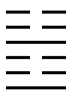
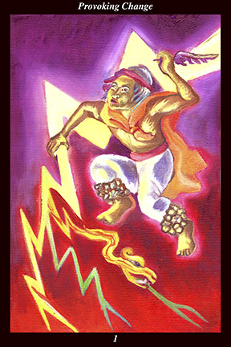

 | IMAGE:A male warrior dances with the storm, holding a lightning bolt in one hand and a feather in the other. Where the lightning bolt forks, it takes the form of a serpent of fire, light, and energy. The rattles around his ankles make thunder every time his feet strike the ground and his eyes are fixed on the sky above. |